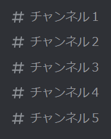

/hiroyukiコマンドの詳しい使い方
/hiroyukiは、「ひろゆき」という文字を含まないチャンネルでも、1/18の確率でひろゆきが反応するようになるコマンドです。
例えるなら便◯Botです。
ここに５つのチャンネルがあります。
例えば、この５つのチャンネルの内「チャンネル１」だけをオンにしたい場合、
/hiroyuki all off
↓
/hiroyuki channel #チャンネル１ on
のような順番で実行すると一番手っ取り早く設定できます。
逆に「チャンネル１以外」をオンにしたい場合、
/hiroyuki all on
↓
/hiroyuki channel #チャンネル１ off
のような順番で実行すると一番手っ取り早く設定できます。